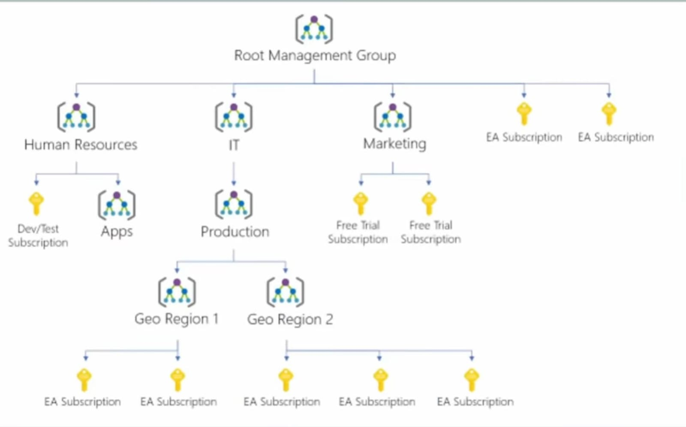

🌳 Azure Resource Hierarchy
📌 Overview
Understanding how Azure organizes resources is critical for billing, access control, and policy management. There form levels of scope in the Azure Resource Hierarchy.
Management Groups > Subscriptions > Resource Groups > Resources
1. The Four Levels
🧱 Level 1: Resources
The individual instances of services you create.
- Examples: A Virtual Machine, a SQL Database, a Storage Account, a Web App.
- Rule: Every resource must belong to exactly one Resource Group.
📂 Level 2: Resource Groups (RGs)
A logical container that holds related resources for an Azure solution.
- Purpose: Lifecycle management. If you delete the RG, you delete everything inside it.
- Best Practice: Group by lifecycle (e.g.,
rg-app-devcontains the VM, VNET, and Storage for the dev app).
💳 Level 3: Subscriptions
A logical unit of Azure services that links to an Azure account. It is a boundary for billing and access control.
- Billing Boundary: You get one bill per subscription.
- Access Boundary: You can give someone "Owner" access to Subscription A, but they can't see Subscription B.
- Limits: Subscriptions have hard limits (quotas), e.g., max 250 storage accounts.
🏢 Level 4: Management Groups
Containers that help you manage access, policy, and compliance across multiple subscriptions.
- Scope: A Management Group can contain Subscriptions or other Management Groups (up to 6 levels deep).
- Use Case:
- Policy: Apply a policy "Do not allow creating VMs in West US" to the "HR Department" Management Group. All subscriptions under HR automatically inherit this rule.
- Compliance: Enforce compliance standards across the entire organization.
🌲 Visualizing the Hierarchy
+------------------------------+
| Root Management Group |
+------------------------------+
|
+-------------------------------+
| HR Management Group |
+-------------------------------+
/ \
/ \
+-----------------------+ +-----------------------+
| HR Dev Subscription | | HR Prod Subscription |
+-----------------------+ +-----------------------+
| |
+-----------------+ +-----------------+
| RG-App-Dev | | RG-App-Prod |
+-----------------+ +-----------------+
/ \ / \
+--------+ +--------+ +--------+ +--------+
| VM | | S3 Acc | | VM | | SQL DB |
+--------+ +--------+ +--------+ +--------+
🔒 Policy & Access Inheritance
A key concept in Azure is Inheritance. Settings applied at a higher level trickle down.
RBAC (Access Control):
- If you give a user "Contributor" role on the Subscription, they automatically have "Contributor" on every Resource Group and Resource inside it.
Azure Policy:
- If you apply a policy "Require Tag: CostCenter" on a Management Group, every Resource Group and Resource created in any child Subscription must have that tag.

💡 Exam Tips for AZ-900
- Lowest Level: Resources.
- Highest Level: Management Groups.
- Resource Groups: Can NOT contain other Resource Groups (No nesting).
- Region: A Resource Group can be in 'West US' while the VM inside it is in 'East US'. The RG location is just where the metadata is stored.
- Billing: Happens at the Subscription level.